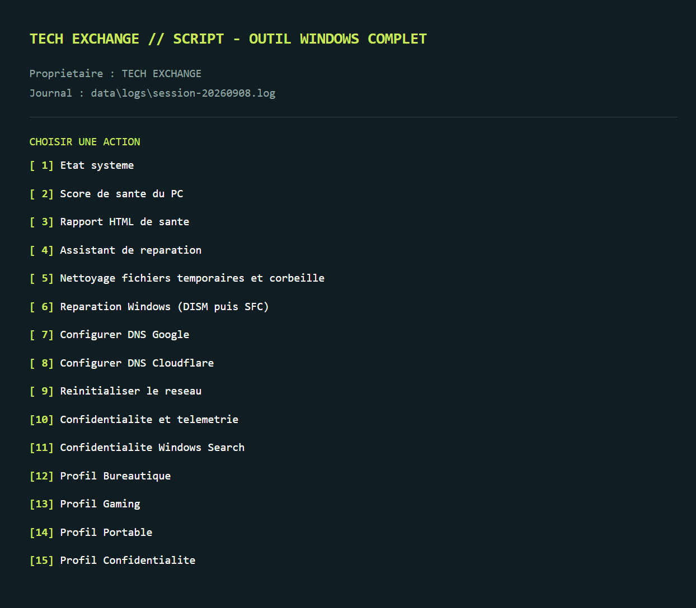
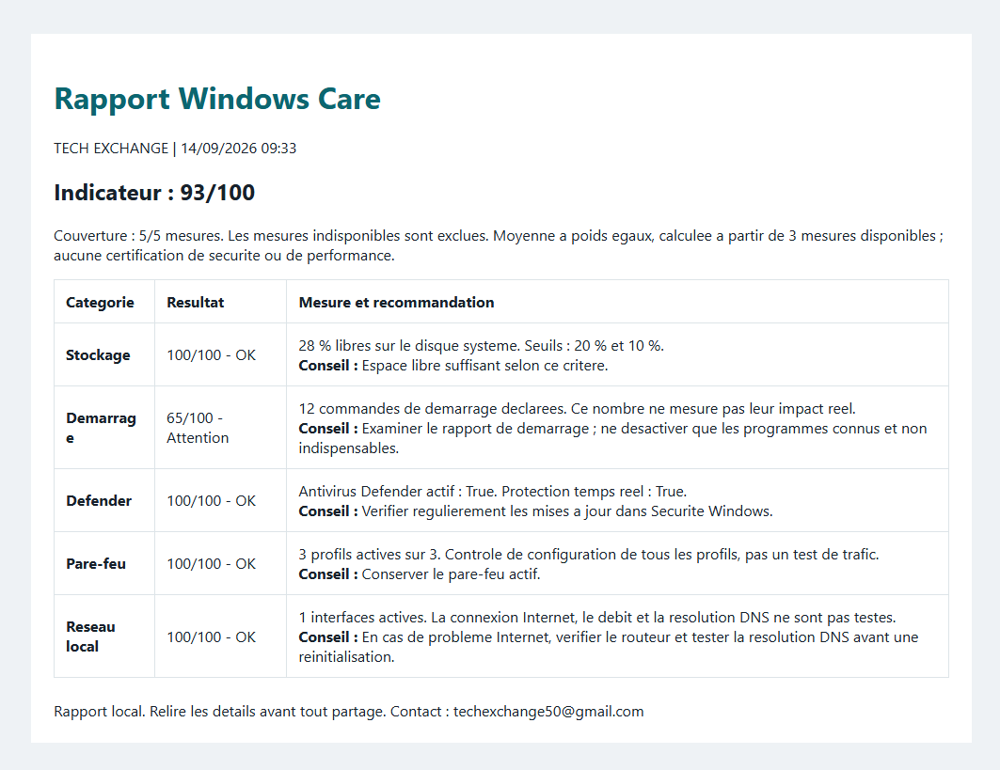

Sur le poste concerné
Décompressez Windows Care sur l’appareil à dépanner et lancez le programme. Les contrôles portent sur ce poste Windows 10 ou 11.

Windows Care / pour les techniciens
Une boîte à outils à lancer sur le PC à dépanner. Identifiez les anomalies avec les diagnostics intégrés, ou utilisez votre propre audit pour choisir directement l’action adaptée. Vous gardez la main sur chaque intervention.
Décompressez Windows Care sur l’appareil à dépanner et lancez le programme. Les contrôles portent sur ce poste Windows 10 ou 11.
La cause reste à trouver ? Utilisez les diagnostics. Votre audit est déjà fait ? Accédez directement à l’un des 36 choix du menu.
Choisissez l’intervention qui répond au constat, consultez son effet et confirmez les modifications. Un symptôme ne déclenche pas une réparation automatique.
Relancez le contrôle utile et reproduisez le problème initial. Les journaux et rapports locaux vous aident à documenter l’intervention.
Commencez par le choix 36, « Premiers secours », ou un diagnostic précis : réseau, Windows Update, pilotes, ressources ou intégrité Windows. Lisez les mesures et les pistes, puis décidez de la suite.
Trouver un outil par symptôme →Votre audit a identifié le besoin ? Saisissez le numéro de l’action dans le programme. Aucun audit global obligatoire : vous pouvez ouvrir directement la réparation Windows, le centre des applications ou un autre outil.
Accéder aux 36 actions →Les réglages de confidentialité, DNS et alimentation sont sauvegardés avant modification. Les limites de restauration des nettoyages et réparations sont expliquées dans le guide. Le mode simulation permet d’explorer avant d’agir.


Votre boîte à outils sur le terrain
Extrayez tous les fichiers du ZIP dans le même dossier sur le poste concerné. Le lancement habituel avec SCRIPT_TOOL.bat demande les droits administrateur. Pour ouvrir le menu sans élévation, lancez SCRIPT_TOOL.bat -StandardUser ; les actions système qui exigent ces droits seront refusées. Le mode -DryRun permet de découvrir les actions sans modifier les réglages système.
Produit développé par TECH EXCHANGE
+241 77 17 14 32 · techexchange50@gmail.com
Extrayez tous les fichiers du ZIP dans un même dossier.
Partez du symptôme ou de votre audit, sélectionnez le numéro utile et confirmez l’action après lecture de son effet.
Consultez le résultat, redémarrez si demandé, puis refaites le contrôle et le test qui révélaient la panne.
Aux techniciens de maintenance et de support qui interviennent directement sur un poste Windows. Le programme rassemble les outils ; le technicien interprète les résultats et choisit l’intervention.
Le programme se lance depuis le ZIP extrait, sans installateur Windows Care. Gardez ses fichiers ensemble. Certaines fonctions utilisent Internet et les outils Sysinternals sont optionnels.
Non. Si votre audit est déjà fait, choisissez directement une action. Les parcours par symptôme servent à vous orienter lorsque la cause reste à déterminer.
Il présente les anomalies détectables par ses contrôles et des pistes à examiner. Une mesure indisponible reste une inconnue. Le score de santé ne certifie pas qu’un PC fonctionne parfaitement.
Les réglages sauvegardés de confidentialité, DNS et alimentation disposent d’une restauration. Le nettoyage, DISM/SFC et la réinitialisation réseau n’ont pas de retour arrière dans Windows Care. Le guide précise les limites de chaque action.
Utilisez le rapport HTML (03), les journaux ou le dossier de support (29). Relisez les informations du poste avant tout partage. Windows Care est développé par TECH EXCHANGE.